About me
Seven years of disciplined service in the Philippine Coast Guard taught me how to build systems, manage operations, and stay precise under pressure. That same discipline now drives how I support businesses — combining hands-on administrative work with automation systems that run in the background so nothing slips and nothing gets repeated unnecessarily.
How I got here, and what I bring to a team.
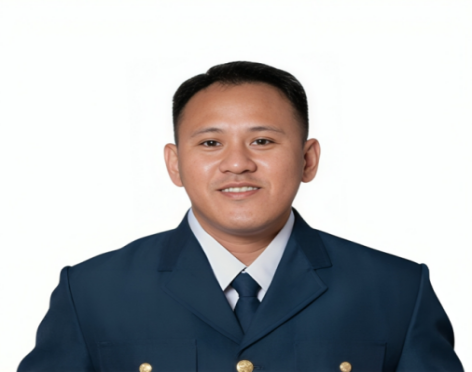
Bon Jovi F. Sadaya
Administrative & Operational VA · Cebu, Philippines
Philippine Coast Guard · 7 Years · Top 1 of 55
During my 7 years with the Philippine Coast Guard, I built a complete documentation and file management system from scratch, maintained 80+ official files in Google Drive, and prepared 10+ compliance reports monthly with 100% accuracy. I also managed official email communications and created presentation materials for command-level briefings.
I graduated Top 1 of 55 students in the Coast Guard Information System Technician Specialization Course with a 96.77% final average, earning multiple awards for academic excellence. I also hold a TESDA NC II in Computer Systems Servicing, validating my technical foundation.
I work as an Administrative & Operational Virtual Assistant who builds automation systems alongside the day-to-day work. Clients get the reliability of a real person monitoring operations live during working hours — plus the efficiency of Make.com, Zapier, and AI tools running in the background handling the routine, so their business moves faster and more reliably without adding to their workload.
I've deployed live AI agents on Facebook Messenger and portfolio websites that qualify leads 24/7 through natural conversation — logging to Google Sheets and sending instant alerts without any manual input. Before my VA work, I handled 20,000+ government records at the Department of Social Welfare and Development — building the data discipline and accuracy that I bring to every client engagement today.
I'm open to remote opportunities in administrative support, operations management, data management, and automation setup — where my combination of military-grade discipline, 7 years of operations experience, and modern AI automation skills can make a real difference to how a business runs.
⬇ Download My CV (PDF)Verified credentials — government issued and platform certified.
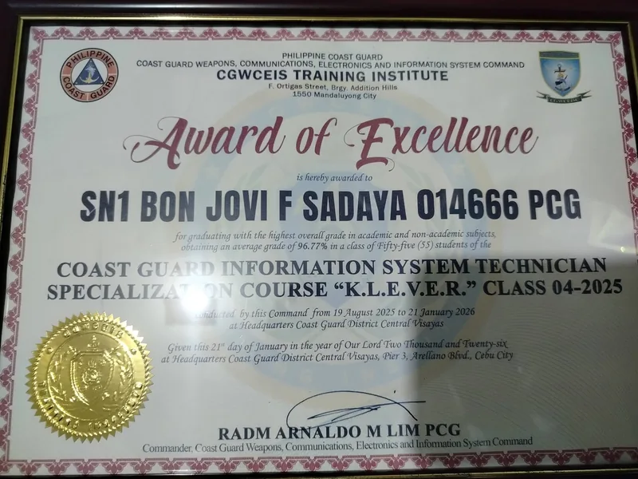
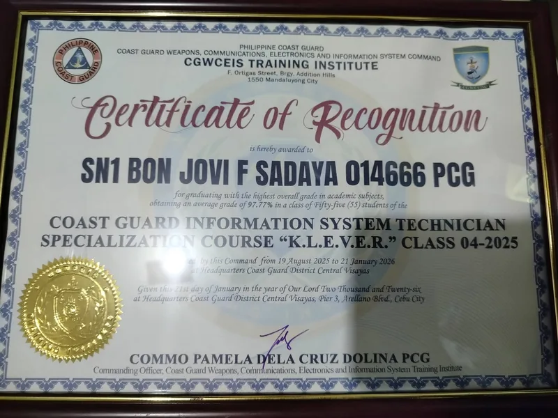
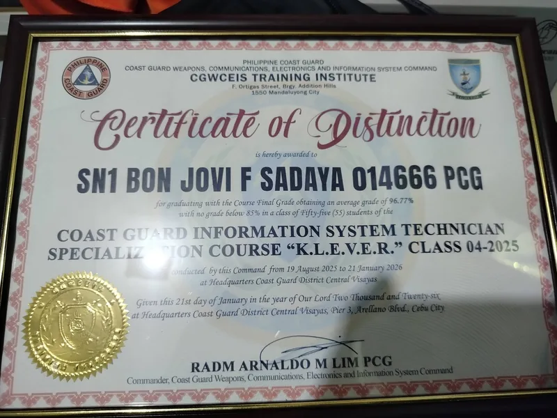
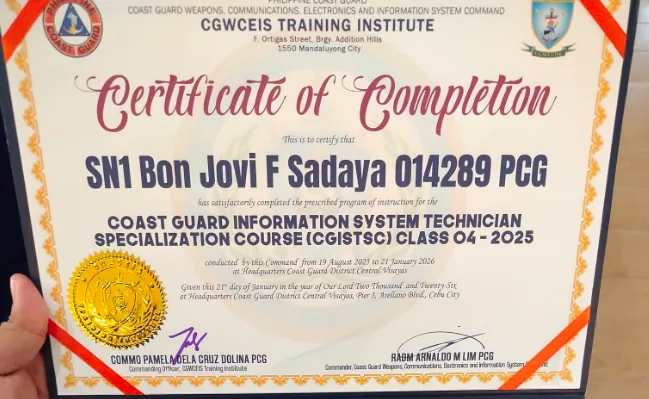
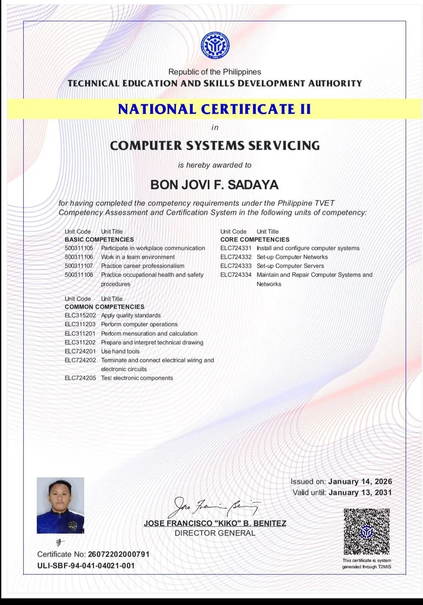
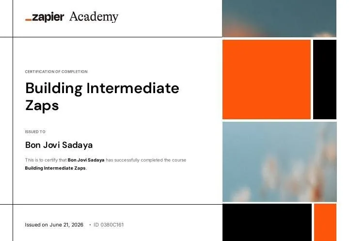
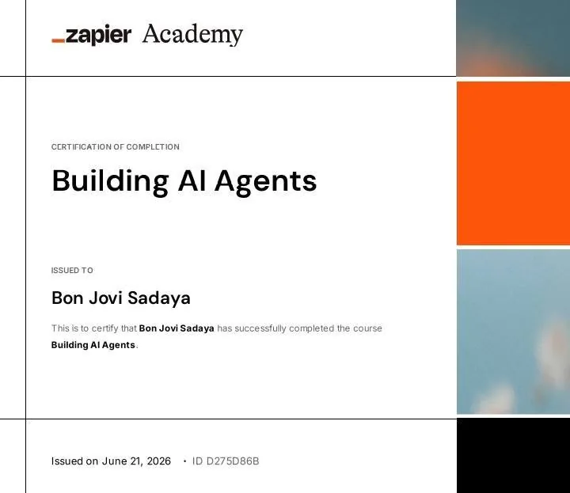
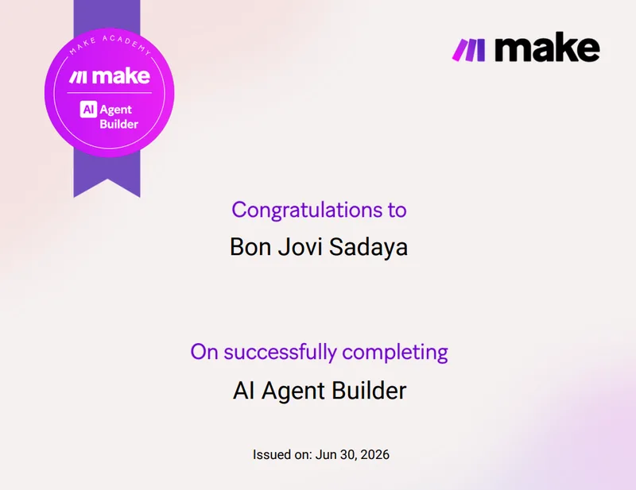
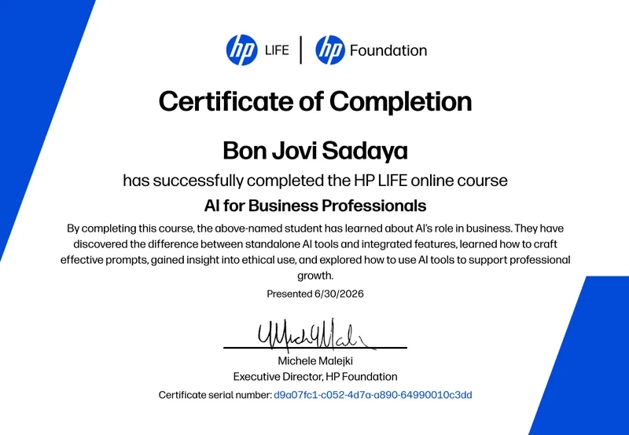
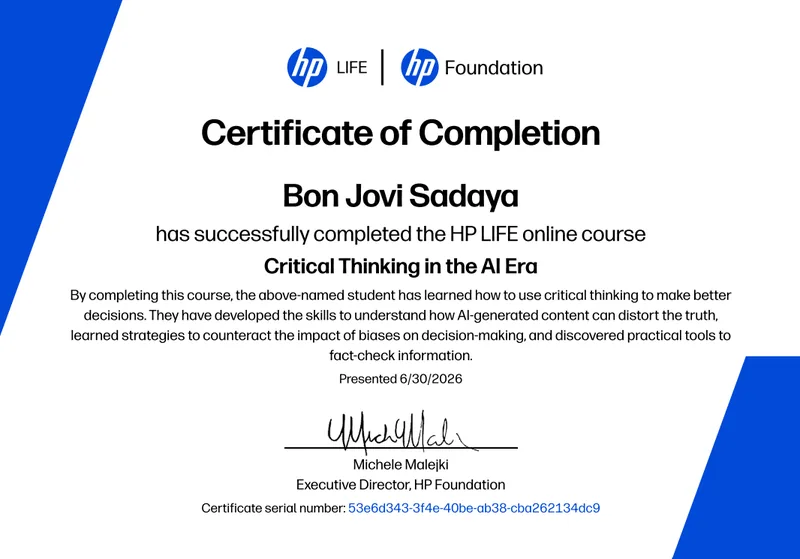
Core areas I cover as an Administrative & Operational VA.